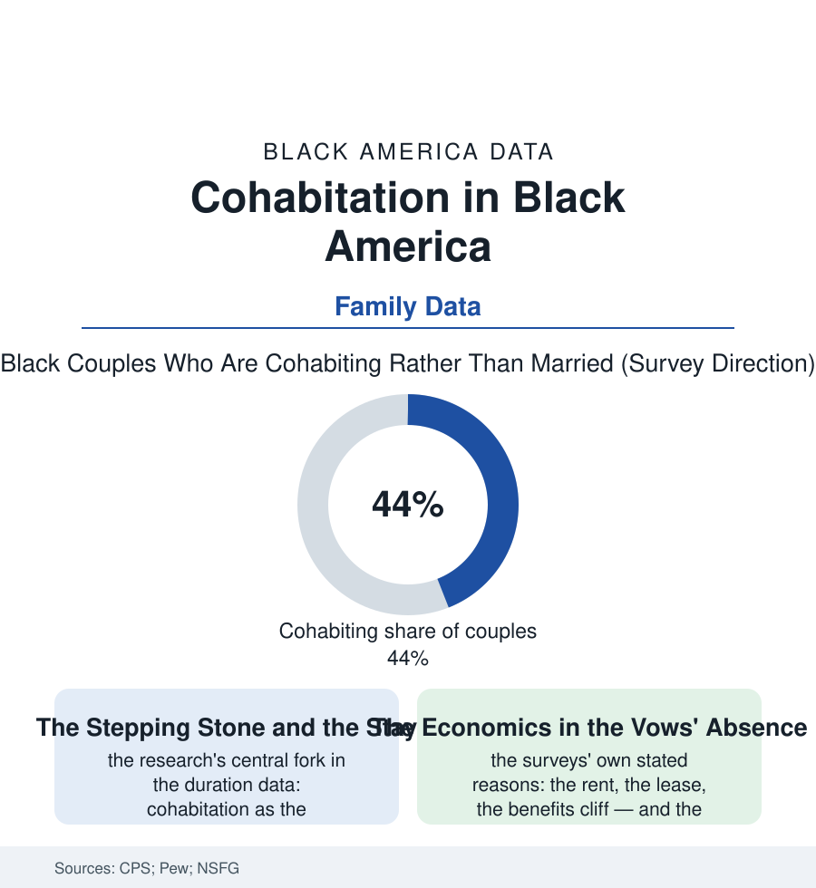

Black Census
Living Together: Cohabitation in Black America
Nearly half of Black adults in couples are living together unmarried — the census's quietest family revolution, driven by economics the surveys can name and meanings only the couples can. The cohabitation file.

The census counts couples, and over two generations its long counting has caught a revolution: the share of coupled Black adults who are married has fallen steadily while the share living together unmarried has climbed into the range where the two forms approach parity — a transformation of the family's architecture as large as any in this section, conducted without manifesto, one lease at a time. This article reads the cohabitation file.
The Numbers and the Threshold
The trend data are unambiguous in direction: cohabitation's rise across every group in the CPS series, its Black rows running at the movement's front — the median age of the cohabiting couple, the share of cohabiting households raising children (the family file's quiet fact: a large share of Black children live, at some point, in a cohabiting-parent household, the arrangement's child-rearing function outgrowing its 'pre-family' reputation in the data), the duration data splitting the phenomenon into its two institutions — the short cohabitations that convert to marriage at high rates in the higher income rows (the engagement's antechamber, the trial the respondents describe) and the longer, child-raising cohabitations of the lower rows, whose stability the longitudinal studies measure below marriage's and above the single-parent years', a durable form the sociology is learning to describe on its own terms rather than as a failed wedding. The surveys' stated-reasons rows give the economics their voice: the couples' own accounts cite the financial threshold — the wedding's cost, the debt file, the benefits cliffs of the program rules (the household-composition arithmetic by which a marriage certificate can cost a family its housing voucher's math or its tax credit's shape — the policy file's marriage penalties, itemized by the couples themselves), and the standard the respondents articulate with striking consistency across the studies: marriage as the capstone of an achieved stability rather than the foundation on which to build it — the sequence the whole economy's data suggest has inverted, the certificate moved from the beginning of the adult economic story to its summit, in the Black rows as in the nation's, with the Black rows' wage and wealth files moving the summit, for many, out of the decade's reach.
What the Form Carries
The consequences run through the section's other files like plumbing: the kinship file (the cohabiting partner's grandmother-status negotiated family by family — the holidays, the hospital's next-of-kin forms, the church's membership rows, the culture's pragmatic absorption running ahead of the law's), the legal file (the cohabitant's near-invisibility in the default rules — the hospital consent, the tenancy's succession, the estate file's intestacy rows where the unmarried partner of twenty years inherits nothing by default, the domestic-partnership and cohabitation-agreement instruments of the lawyer file's growing family practice), the wealth file (the couple's balance sheet built without the marriage file's legal scaffolding — the house bought by one name, the retirement accounts unshareable, the Social Security survivor rows closed — the cohabiting couple's do-it-yourself estate plan the norm in the survey of the unplanned), and the children file's stability research, which returns, on examination, the file's most humane datum: the outcomes track the stability and the resources far more than the certificate, the form's meaning supplied, in the end, by the couple's own account of it — the stepping-stone couples and the stay couples indistinguishable in the census's checkbox and different in everything the follow-up interviews measure. The demographers project the trend's continuation in every model: the married share of couples falling, the cohabiting share's plateau uncertain — the form having become, in two generations, simply part of how Black America, like America, sequences love, money, and paperwork. The file's closing note is methodological and tender at once: the census learned to count these households late, and counts them still imperfectly. The households themselves were never confused about what they were.
Reading the Cohabitation Data
The cohabitation file is the census section's love-and-arithmetic chapter: the family's form repriced by the economy, the vows rescheduled by the balance sheet. The CPS publishes the shares. The leases — two names, one address, renewed year after year — publish the institution, in the only registry most of these couples ever asked for.
More in Black Census
The Black Population of the United States: Size, Definitions, and Distribution
The Black population of the United States totals 52.8 million — 15.4 percent of the nation. How the Census Bureau defines and counts the population, and where it lives.
Black Median Household Income in the United States
Black median household income stands at $56,490 in the Census Bureau's annual income report — how the figure is measured, how it compares, and what drives it.
The Black Poverty Rate: Levels, Children, and the Long Trend
The official Black poverty rate is 17.1 percent — against 11.1 percent nationally and 7.7 percent for non-Hispanic White Americans. How poverty is measured and what the data show.
Source: U.S. Census Bureau Current Population Survey and ACS; Pew Research Center cohabitation studies; National Survey of Family Growth.